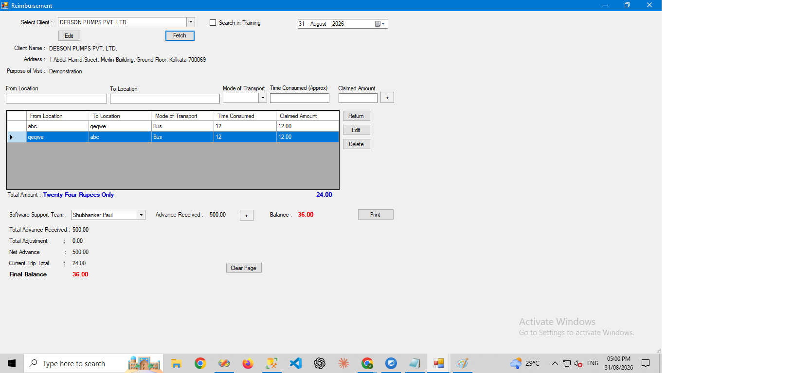

Reimbursement Management System
A desktop application for managing employee reimbursement claims end to end — submission, approval workflow, and payout tracking — backed by SQL Server.
Features
- Employee reimbursement claim submission with supporting details
- Approval workflow with status tracking
- Claim history and payout records per employee
- Reports on pending, approved, and settled claims
Screenshots


Technologies Used
VB.NET, MS SQL Server, Windows Forms
Challenges & Learnings
The main challenge was modeling a clean approval workflow (submitted → approved/rejected → settled) in the database while keeping the UI simple enough for non-finance staff to use without training.